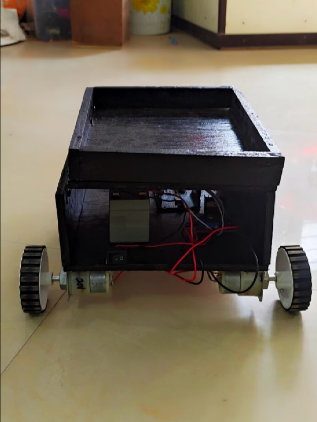
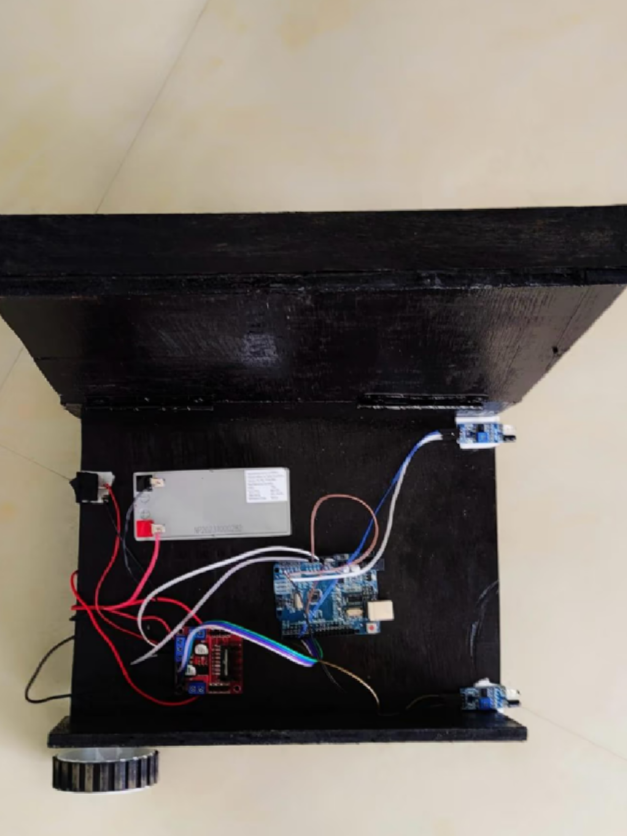
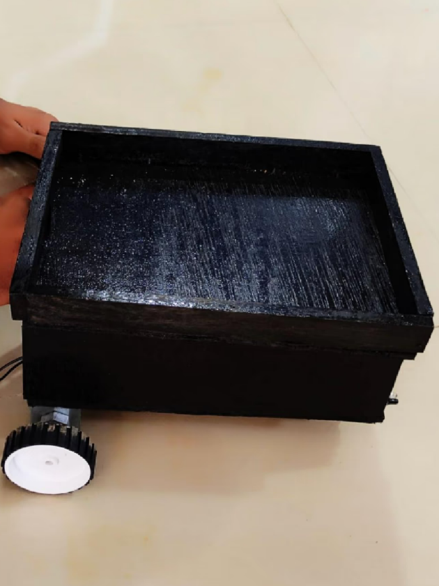

Over View
A hardware prototype robot designed to follow human movement using IR sensors. It demonstrates real-time motor control based on sensor input, using Arduino as the brain and a motor driver for actuation.
Features
- Real-time input processing with Arduino.
- IR sensors detect human proximity and direction.
- Motor driver controls speed and turning.
- Rotates smoothly using caster wheels.
- Designed for indoor terrain navigation.
- Simple and efficient prototype logic.
Hardware Used
- Arduino UNO
- IR Sensors
- Motor Driver Module (L298N)
- DC Gear Motors
- 12V Battery
- Chassis + Caster Wheel
Working
The IR sensors detect obstacles or humans ahead. Based on sensor signals, the Arduino sends commands to the motor driver to move forward, stop, or turn. The robot responds instantly to the human position using real-time input from sensors. Smooth rotation is achieved using a rear caster wheel.
What I Learnt
- Arduino programming and real-time decision-making.
- Motor control using L298N driver module.
- Sensor-based robotics and obstacle logic.
- Practical hardware integration and wiring.
- Designing efficient prototypes for real-world usability.
Prototype Views


